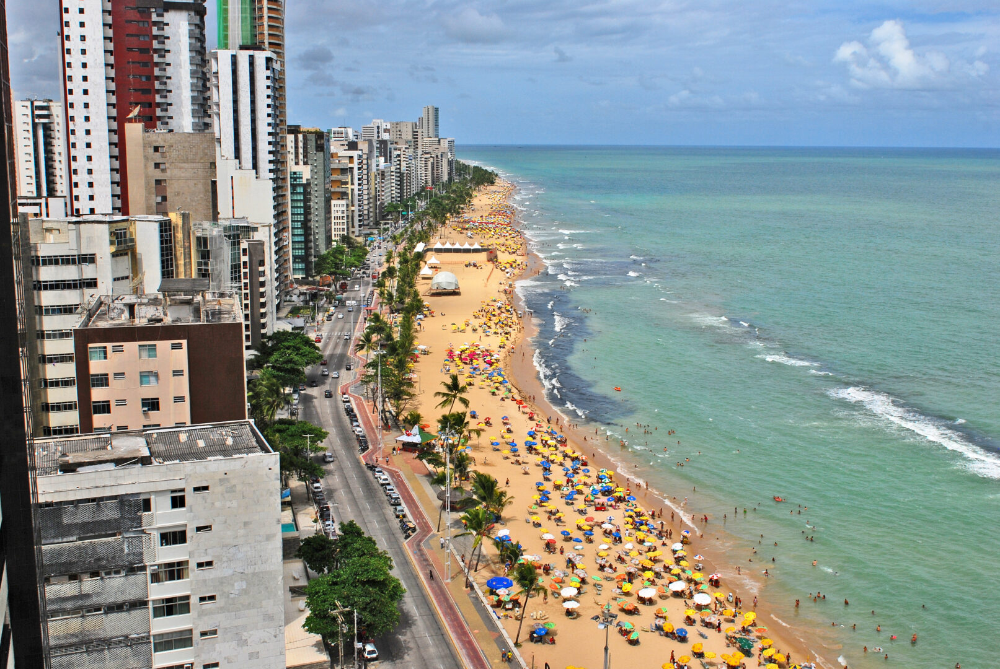

Pernambuco é um estado vibrante localizado na região Nordeste do Brasil. Sua capital, Recife, é conhecida como a "Veneza Brasileira" por seus rios e pontes, além de ter um centro histórico cheio de charme, com igrejas antigas e edifícios coloniais. Pernambuco é famoso pelo seu folclore, especialmente o frevo e o maracatu, além do Carnaval animado. As praias de Porto de Galinhas e Boa Viagem são destinos muito procurados pelos turistas. O estado também tem uma forte tradição cultural, com uma culinária deliciosa, música e festas tradicionais que refletem sua história rica e diversa. Pernambuco é um lugar cheio de energia, história e belezas naturais!

voltar